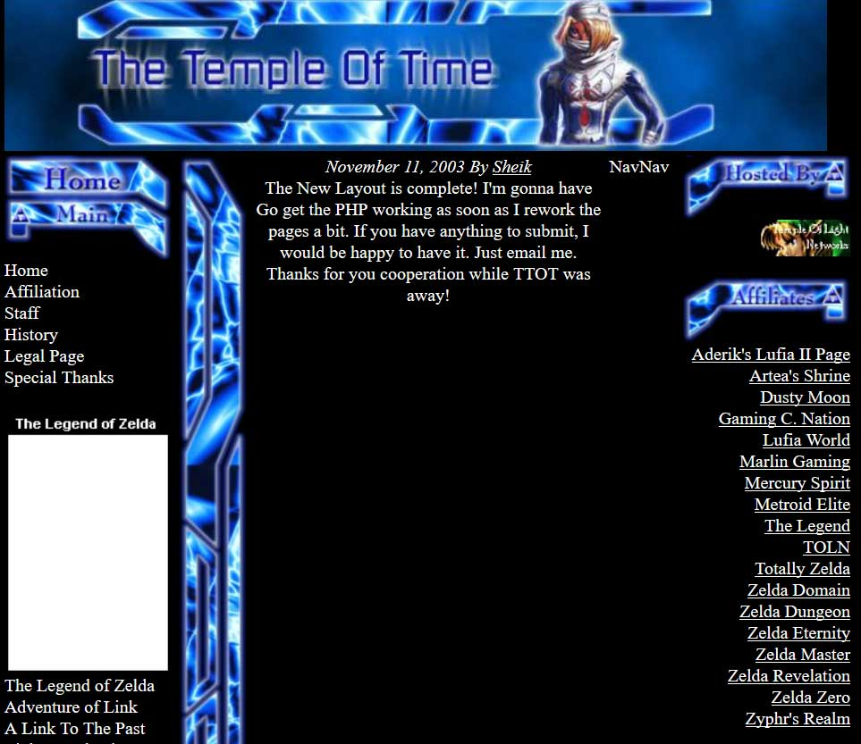

Well, I did not do a great job of keeping this page updated for the past month, but I have been busy working on the website nonetheless.
I am working on designing a real layout for this blog. I've considered a few different ideas, but I think I finally have a specific idea nailed down. It shouldn't take me long to build it, so hopefully I can share it soon.
At the same time, I have already built a small "just for fun" demo. Shortly after my last update, I spent an evening recreating an old Zelda Universe layout from 2001. It was originally designed with HTML tables, but I rebuilt it using CSS Grid and other new techniques. I quite enjoyed it. I am planning to spend a little more time making it truly responsive with a mobile layout. In the end, it's just a demo of how it could be done. You can view the demo at www.watcherjoshua.com/zu3/index.html.
I also began another project that I was hoping to have finished this month. It's a small Zelda-related project that has been planned for years, but it is finally getting off the ground. I will share more when it is ready!
A lot of my time the past month has been spent finishing some smaller projects for Zelda Universe. I published a review of Detective Pikachu earlier this month, and I am working on the oh-so-exciting job of navigating GDPR requirements. I am also working on an interview and potentially some other game reviews as well.
In gaming, my time has been occupied with Xenoblade 2 recently. I think this might actually be the first Xenoblade game that I finish.
E3 is only four weeks away. I am excited to meet up with my friends again. It's always an enjoyable experience!
An interesting cross-browser testing situation
Well, I had intended to spend just a little bit of time tonight fixing up the styles on the site. I left a lot of things very plain, and I thought I could pretty it up a bit. Instead, I was informed that the entire layout was broken in Safari. Fixing it was pretty easy, but setting up a local copy of Webkit on Windows proved to be more complicated than I expected.
I also got a bit lost for a few hours while I broke down the problem. I ended up building a reduced test case (it will only look broken if you are running a current Safari/Webkit). The error seems to be caused by a combination of an auto width grid track, writing-mode, and margin: 0 auto;.
It has been many years since I had to decipher a cross-browser rendering problem. It was much easier this time than it tended to be in the past. It was an interesting detour, but it means that playing with pretty things will have to wait for another time. My weekend is looking fairly busy, so I may not get back to it until next week.
Reflecting on the past and beginning something new
Hi. I'm Joshua, but you probably already knew that if you're reading this.
I first dabbled in building websites about 18 years ago, in the year 2000. That's pretty hard to believe even as I type it. My first experience was with Angelfire (which I just learned still exists). They advertise "no coding required" today, but back then they had an HTML cheatsheet. My first experience with code was copy and pasting <img> and <a> tags from that page. It wasn't long before 12-year-old me was drawn to the Geocities page builder as an alternative to coding.
So, Geocities was where my first real websites were born in 2002.
I am fortunate to remember a lot of my web design journey from that time. Even without a stable Internet connection, I spent most of my summer designing new layouts for my small Legend of Zelda fansite. The whole store is quite long, and not really the focus of this post, but it would be worth revisiting in the future.

This screenshot is one of my earliest hand-coded website designs. It was done entirely with absolute positioning. Content was published with a simple PHP "content management system" that loaded plain text files into the center content area. This screenshot was pulled from Archive.org.
A combination of a rudimentary web design course in High School and the advice of a friend reintroduced me to coding in HTML, but now I could also use CSS and PHP.
Overall, I was mostly self-taught, but I needed assistance making big leaps in coding. I didn't understand how to use HTML tables until taking the course in High School, I didn't understand absolute positioning or PHP without a couple private lessons, and I didn't understand CSS page layout until college.
After college, my career mostly focused on graphic design (though working in the sign industry has a heavy emphasis on layout), and web design became more of a hobby. My only exposure was my continuing work in the online Legend of Zelda community.
The web moves forward pretty quickly. I tried to stay relatively informed about major things that were happening, but I did not learn many new things for almost 10 years.
Unfortunately, it took me almost 10 years to realize that. So, in late 2017 I resolved to sit down and relearn. I pulled out my old HTML5 book, which was surprising still relavent 7 years after being published, and something just clicked. I felt very inspired to learn what I had missed. I started listening to web design lectures and podcasts during my commute. Some of them were about progressive enhancement and others were about really cool new layout tools in CSS. And then I tried to learn Javascript for about a 12 time.
I realized something important: my knowledge really wasn't out-of-date. Everything I already knew was still relavent, and people that I knew didn't know all of the new things either. A podcast really cemented this idea for me: I don't need to learn everything about web design, and it's impossible to learn everything about web design.
Since January, I have made web design a regular part of my routine and spent most of my efforts improving Zelda Universe. I also started multiple small web design projects that I haven't published yet. I have a bad habit of starting personal web projects and never finishing them, but they are great learning experience either way.
Recently, I bought a few new books and started listening to lectures and podcasts again. A couple days ago, without much thought, I turned on a podcast I knew I had already heard. I did not remember what it was actually about, but I have come to respect both the host and her guest over the past several months (and even more so when I realized that he had written not only the reliable HTML5 book from 2010 but also a book about Javascript that has been on my shelf for years as well) so I knew it would be a worthwhile exercise.
The podast is more than hour long and covers a range of topics, but at the end of the conversation are a few minutes of discussion about personal websites and how so many of them never make it online because we tell ourselves they just aren't quite good enough.
This resonated with me. I have wanted to publish things for years and never gotten around to it. I want to write about web design and just play around with fun new CSS. I want to write about video games even when it doesn't fit the scope of what Zelda Universe covers. I want to write about events I attend, interesting articles I read, and just whatever else comes to mind.
The conversation stuck with me. It's been rather hard to focus for the last couple of days. The sign industry is a busy place, but my head was spinning with ideas for a simple layout that would help me publish now. And this is it. The layout is certainly not polished. There are a lot of things I hope to improve over time, but today the most important part is just having a personal place to publish.
This is the beginning of something new. Let's see where it goes.
- Joshua Lindquist
About Me
My name is Joshua Lindquist. I sometimes use the alias WatcherJoshua. By day, I am a graphic designer working in the sign and printing industry. By night, I am the content director of Zelda Universe. I like to hang out on Twitter.